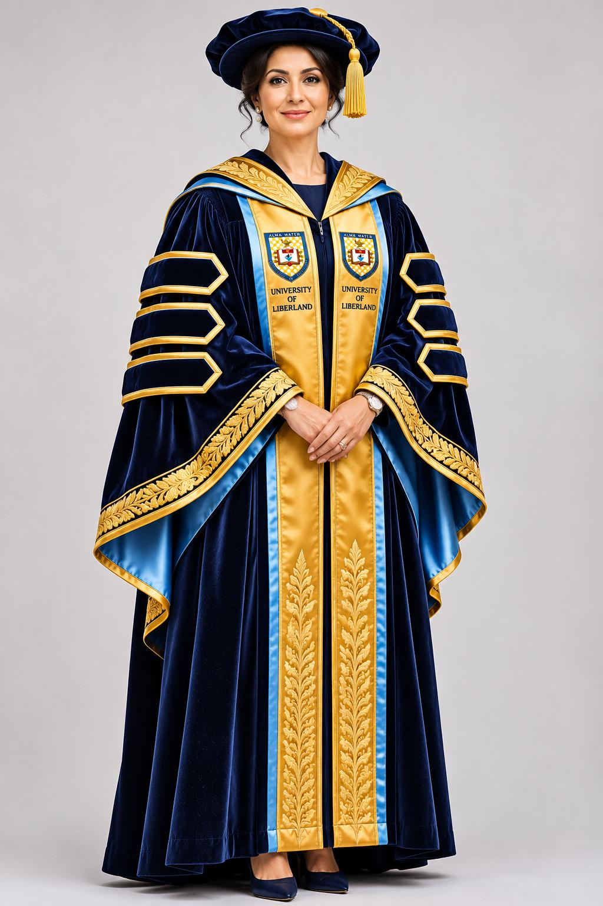
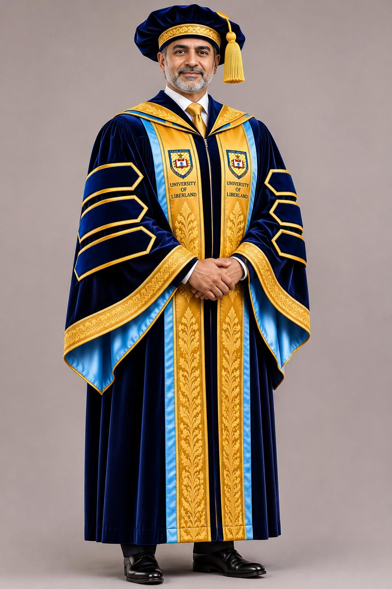
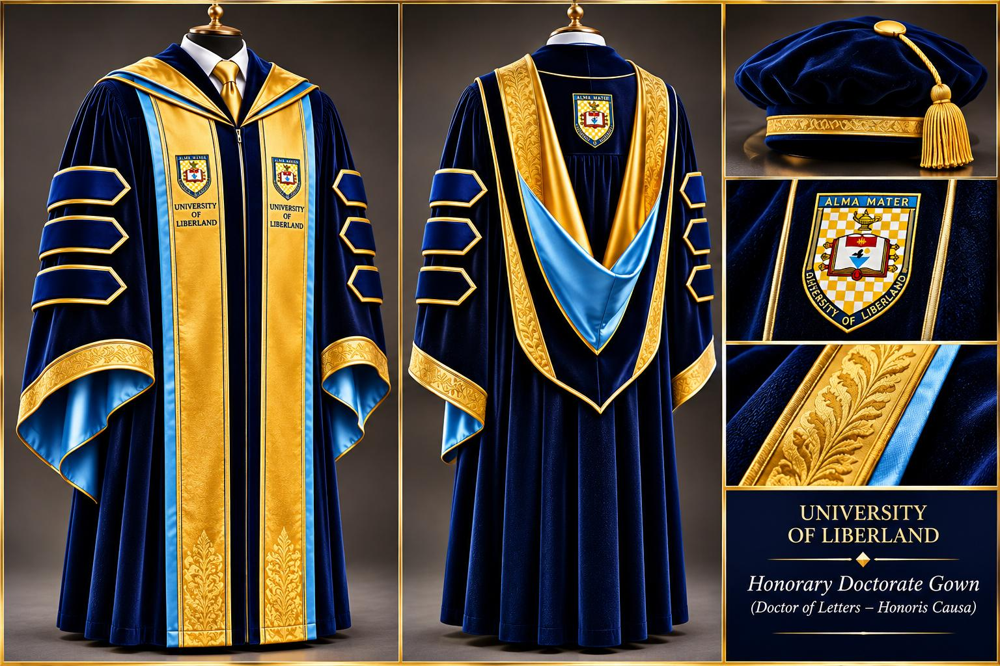
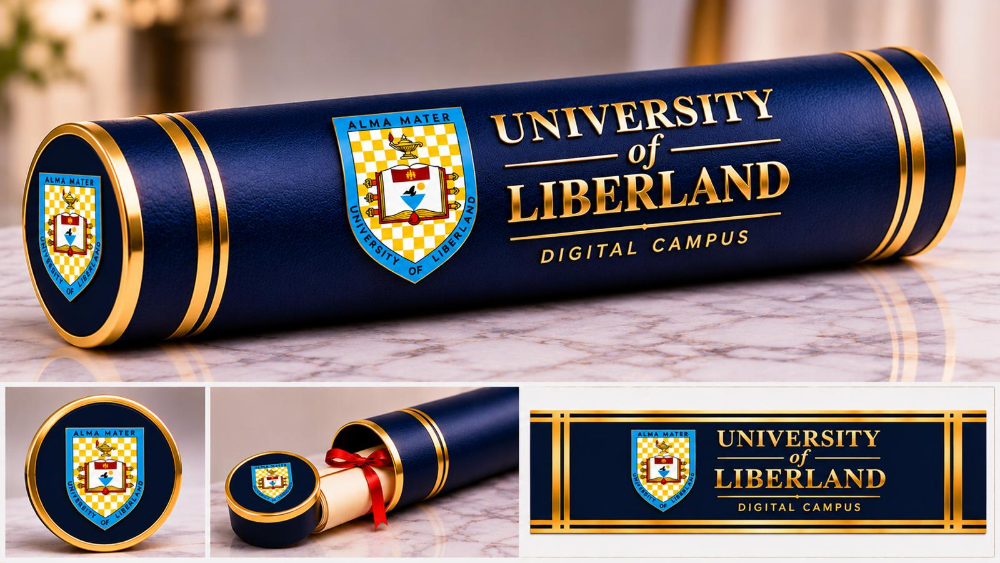

Honorary doctorate
Recognition of distinguished contribution to a field or society. It is separate from an earned PhD or other research doctorate.
HONORARY RECOGNITION
Celebrating people whose work advances knowledge, enriches communities and creates lasting public benefit.
RECOGNITION WITH CLARITY
An honorary award recognises exceptional achievement or service. It is distinct from an academic qualification earned through a programme of study, assessment or research.
It does not certify completion of a bachelor’s, master’s or doctoral programme, or confer professional registration.
Honorary recognition cannot be purchased. A donation or payment does not secure an award.
UNDERSTANDING THE TITLES
Universities use different honorary titles under their own rules. These are explanations, rather than a catalogue of awards offered by Liberland University.
Recognition of distinguished contribution to a field or society. It is separate from an earned PhD or other research doctorate.
A form of honorary recognition used by some universities. It does not represent completion of a taught or research master’s programme.
A form used by some institutions, subject to their own rules. It is distinct from a bachelor’s degree earned through study.
Any titles adopted here will depend on the university’s confirmed awarding authority and formally approved regulations.
OUR INTENDED APPROACH
The proposed framework centres on evidence of sustained achievement and public benefit.
CEREMONIAL IDENTITY
Blue and gold ceremonial concepts celebrating contribution, community and achievement.




These illustrations show ceremonial design ideas. They do not identify award holders or establish an approved award title.
COMMON QUESTIONS
Use the form below to ask about honorary recognition or tell us about someone’s contribution. Our team can discuss the appropriate next steps with you directly. An initial enquiry or nomination discussion does not guarantee an award.
An honorary award recognises contribution. It does not replace an earned degree, academic assessment or the qualifications required for employment or professional practice.
No. This recognition route has no checkout or payment process. Financial support must not influence an award decision.
An honorary doctorate should always be identified as honorary. It should not be presented as an earned doctorate or used to imply academic or professional credentials. Any guidance for recipients will be published with the approved award regulations.
START A CONVERSATION
Ask about honorary recognition, or introduce someone whose contribution you believe deserves consideration. We can take the conversation forward with you directly.
Please share a brief summary of publicly available achievements. Leave out identification documents, payment details and sensitive personal information.
Submitting this form does not guarantee an award. Enquiries are saved for staff review; email notifications are currently preview-only in the sandbox.